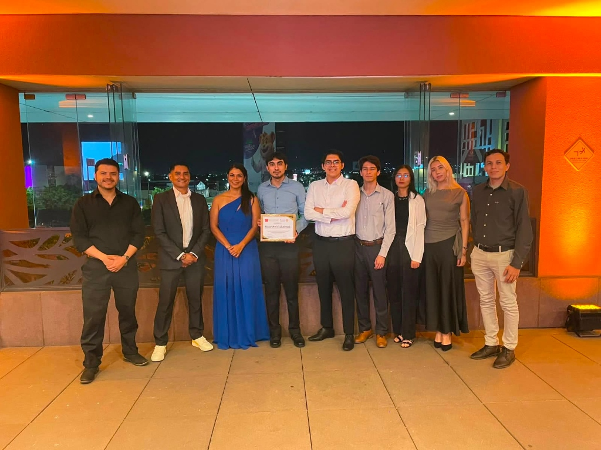

Consultoría
Trabajo con organizaciones
Diseñamos plataformas web, inferencia de modelos LLM, análisis de datos y modelos de visión o machine learning según lo que necesite cada equipo.
Trabajamos desde León, Guanajuato desarrollando plataformas a medida, inferencia de modelos LLM, herramientas de visión artificial y análisis de datos, combinando trabajo para organizaciones con proyectos e investigación propia.
Diseñamos plataformas web, inferencia de modelos LLM, análisis de datos y modelos de visión o machine learning según lo que necesite cada equipo.
Desarrollamos utilidades como medscan CLI y corremos comparativas como U-Net vs Mamba-UNet para respaldar nuestras decisiones técnicas.
Detrás de cada proyecto hay un grupo multidisciplinario que diseña, programa, prueba en campo y documenta junto a cada organización.

Revisamos cómo trabaja la gente en el día a día antes de elegir bases de datos, librerías o modelos de IA.
Separamos responsabilidades, cuidamos los permisos y agregamos pruebas automáticas para que el sistema pueda crecer sin problemas.
Que un programa funcione en pruebas técnicas no prueba por sí solo un impacto médico o social; cada afirmación necesita su propia evidencia.
Dejamos por escrito qué ya funciona, qué está en desarrollo y qué queda pendiente por probar.
Cuéntanos cómo funciona hoy tu proceso, qué datos tienes y qué necesitas resolver. Te respondemos con una propuesta clara de trabajo por etapas.